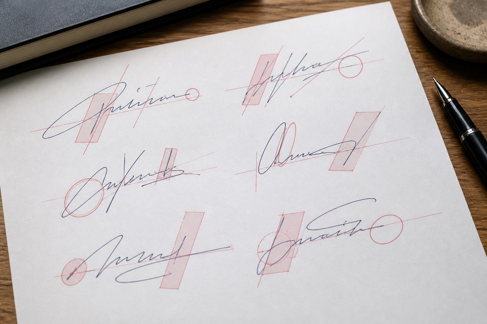

模仿签字练习中常见的结构问题
签名练习最常见的问题不是“写得不像”，而是每一笔都在刻意找位置，结果速度断开，整条线显得僵硬。

比例容易失衡
签字过宽、过高或重心偏移，会导致每次书写结果差异明显。
连笔过于机械
只模仿线条位置而忽略书写顺序，容易出现停顿和不自然的连接。
速度前后不一致
局部过快或过慢会破坏整体节奏，需要按完整动作练习。
先练整体路线，再抠局部
先记住起点、主要转折和收笔方向，连续写出完整动作。整体顺畅后，再处理某个字母或笔画的细节。
不要每次都停下来对照
一边写一边频繁停笔，会破坏原有节奏。可以连续写几次，再把结果放在一起比较，找出反复出现的问题。
字号和倾斜要保持在一个范围
每次大小完全不同，说明整体控制还不稳定。先在相同尺寸的方框或横线中练习，更容易看出比例变化。
结构接近不等于书写自然
练习中常见的问题是每一笔都刻意对准，结果速度中断、连接僵硬。检查时可以先看整体宽高和重心，再看主要连笔是否顺畅，最后比较同一姓名多次书写时是否存在合理变化。
模仿签字样本应来自自然场景，模仿签名需明确主要版本。若材料还涉及模仿笔迹或笔迹鉴定，应保留整页文件，不只使用裁剪图。
常见问题
练习时应该先快写还是慢写？
可以先用较慢速度熟悉结构，再逐步接近日常使用速度。